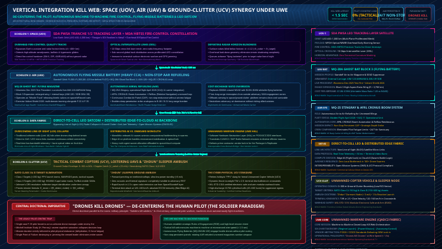
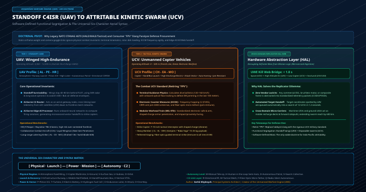

This analytical feature is based exclusively on unclassified open-source intelligence (OSINT), officially released Department of Defense and allied program milestones, and public aerospace engineering literature. Tactical vehicle classifications, architecture models, and software taxonomies reflect conceptual benchmarks developed by the author for open defense standardization and do not disclose proprietary source code, operational flight program (OFP) data, or classified tactics, techniques, and procedures (TTPs).
For a decade, Western airpower doctrine has sought to solve the math problem of contested skies through Manned-Unmanned Teaming (MUM-T). Faced with the staggering procurement cost of fifth- and sixth-generation crewed platforms and the rapid proliferation of adversary integrated air defense systems (IADS), the U.S. Air Force championed Collaborative Combat Aircraft (CCA). By pairing crewed stealth fighters with lower-cost, uncrewed "loyal wingmen," the service aims to project affordable mass into hostile anti-access/area-denial (A2/AD) bastions.
Yet, despite multi-billion-dollar investments across CCA Increment 1, Western doctrine remains trapped in a foundational flaw: it is stubbornly pilot-centric.
Current operational concepts envision the pilot of a single-seat F-35A Lightning II, an F-22 Raptor, or an E-7 Wedgetail mission commander acting as an airborne quarterback. In this model, an aviator traveling at Mach 1.4 under multi-G loading is expected to manage tactical sensors, evade surface-to-air missiles, maintain situational awareness, and simultaneously direct the flight paths, radar modes, electronic warfare emissions, and weapons releases of two to four uncrewed wingmen.
This assumption crashes against human biology. In her foundational study for the Mitchell Institute for Aerospace Studies, Five Imperatives for Developing Collaborative Combat Aircraft for Teaming Operations, senior resident fellow Heather Penney issued a stark warning: adding uncrewed aircraft to a formation does not inherently reduce workload. If human-machine teaming is poorly structured, the sheer volume of data streams, tasking approvals, and tactical micro-management will induce severe pilot cognitive saturation. In the dense electronic warfare environments of a peer conflict—where radio datalinks degrade, line-of-sight networks sever, and missile engagement timelines collapse to seconds—expecting a human pilot to micromanage robotic wingmen guarantees mission failure.
Furthermore, tethering uncrewed mass to crewed aircraft handcuffs the entire formation to human limitations:
To realize the promise of affordable mass and the Combined Joint All-Domain Command and Control (CJADC2) enterprise, the Air Force must abandon the pilot-centric bottleneck. The future of contested air dominance belongs to de-centered, machine-to-machine autonomy.
In the 1998 military science-fiction film Soldier, a cold operational truth is delivered to a commander seeking to replace veteran human fighters with engineered substitutes: "Soldiers kill soldiers." The phrase cuts through strategic euphemisms to define the brutal, reciprocal reality of armed conflict: when a military encounters an adversary capability, victory requires deploying an equivalent or superior force capable of operating under the same rules of engagement and physical brutality.
In twenty-first-century air warfare, the Pentagon faces an identical, inescapable reality: Drones must kill drones.
When adversary forces deploy thousands of low-observable loitering munitions, reconnaissance copters, cruise missiles, and uncrewed interceptors, human pilots cannot serve as the tactical executioners. Expecting an F-35 pilot firing a half-million-dollar AIM-9X or AMRAAM to engage swarms of attritable adversary drones is economically and tactically bankrupt.
Under the Unmanned Warfare Engine (UWE) architecture, the operational paradigm shifts from pilot-directed tasking to autonomous machine-to-machine kill webs:
To execute this "Drones Kill Drones" reality, airpower cannot rely on a single monolithic drone tier. It demands a fully synchronized, vertically integrated kill web spanning from low Earth orbit to the ground-clutter layer.

As illustrated in Figure 1, the airborne standoff layer of this vertical kill web is anchored by a new operational asset: The Autonomous Flying Missile Battery.
A decisive milestone toward this doctrine occurred in December 2025 at the Woomera Range Complex in South Australia, where the Royal Australian Air Force and Boeing successfully executed the first live-fire separation test of an AIM-120 AMRAAM missile from an MQ-28A Ghost Bat. Demonstrating the ability of an uncrewed platform to carry, cue, and launch radar-guided air-to-air interceptors internally, the test validated that Collaborative Combat Aircraft can function as lethal kinetic magazines rather than merely sensor decoys.
In the Block 3 configuration, the Ghost Bat design matures this concept with enlarged, higher-aspect-ratio wings for extended range and reconfigured internal weapons bays capable of housing multiple AIM-120s or GBU-39 Small Diameter Bombs while preserving broadband low-observable signatures. Deployed in June 2026 during Exercise Valiant Shield, the MQ-28 operated alongside F-22s and F-35s across the Western Pacific, demonstrating how uncrewed missile carriers multiply the combat persistence of frontline formations.
However, an uncrewed flying magazine achieves its true strategic potential only when liberated from runway logistics through Autonomous Aerial Refueling (AAR):
By cycling through automated tanker orbits, uncrewed flying missile batteries achieve non-stop persistence (24/7 combat air patrols). Operating 80 to 120 kilometers behind the forward line of own troops (FLOT), these platforms provide standing air-defense magazines delivering weapons payloads comparable to a B-1B Lancer or B-21 Raider—firing salvos into contested corridors on off-board cues, completely decoupled from aircrew duty cycles.
Forty years after President Ronald Reagan delivered his historic March 23, 1983 address proposing the Strategic Defense Initiative (SDI), the dream of comprehensive space-based tracking has ceased to be an exotic science-fiction concept or a multi-billion-dollar geostationary pipe dream. Under the Space Development Agency (SDA), it is being mass-produced in proliferated Low Earth Orbit (pLEO).
The Proliferated Warfighter Space Architecture (PWSA)—specifically the Tracking Layer (Tranche 1 and Tranche 2) operating in tandem with the Missile Defense Agency’s Hypersonic and Ballistic Tracking Space Sensor (HBTSS)—revolutionizes air and missile defense:
dictates that a surface radar mast cannot detect targets skimming terrain dozens of kilometers away.
By providing fire-control quality tracks from space directly to airborne flying batteries (MQ-28/AIM-120), the orbital layer enables pre-horizon intercepts. A flying magazine can launch an air-to-air missile at a hostile vector long before that target appears on any terrestrial radar scope. Reagan’s defensive shield has transformed into an active, distributed offensive kill web.
While space-based tracking and airborne flying magazines dominate medium and high altitudes, the ultimate battle for air dominance is fought in the low-altitude boundary. Yet, the moment uncrewed strike vectors descend into valleys and tree lines to evade adversary air defenses, traditional military communications collapse.
Line-of-Sight (LOS) directional datalinks (such as Link 16 or tactical UHF/VHF radios) require an unobstructed straight line between the aircraft and the drone. The moment a terrain feature intervenes, or the platform drops below the radar horizon, the datalink goes black.
To close this seam, the UWE architecture integrates commercial and military satellite convergence:
Simultaneously, this architecture resolves the onboard computing bottleneck. Defense tech startups frequently promise "full onboard autonomy," attempting to pack massive neural networks into the avionics boxes of expendable drones. Under the high-G stress and thermal load of combat, these monolithic computers overheat, crash, or introduce severe latency during massive saturation swarm attacks.
The UWE model implements Distributed Edge-to-Cloud AI:
This separation keeps expendable drones cheap, reliable, and immune to local computational freezes.
The ultimate purpose of the vertical kill web is not merely to dominate clean skies, but to dismantle the adversary’s anti-access infrastructure on the ground.
As demonstrated by four years of combat in Ukraine, high-altitude surveillance platforms carrying 50-kilogram optical gimbals (the Heavy Gimbal Paradox) fail against disciplined adversaries. Modern air defense systems do not sit in the open; they employ camouflage, multispectral smoke, and tactical radar cycling. Furthermore, the true threat to allied air operations comes from dispersed, low-RCS assets:
Detecting and resolving these small, camouflaged assets from 25,000 feet through cloud decks and oblique slant angles is an optical impossibility. The mission formula of tactical reconnaissance is dictated by target detection resolution, not arbitrary flight ceilings:
Air dominance requires entering the ground-clutter envelope (0–300 meters AGL). By skimming terrain at low altitudes, attritable unmanned copters (UCVs) and winged loitering munitions exploit radar backscatter and fly below adversary acquisition radars’ Doppler notch velocity (Vradial ≤ 25m/s).
Crucially, this layer introduces the "Zhdun" (Sleeper) Ground Ambush:
The hunter becomes the hunted, completely neutralizing the enemy air defense network from the ground up.

To translate this multi-tier vertical vision into operational reality across the Department of the Air Force, the military cannot allow prime defense contractors to build closed, proprietary vertical stacks for each drone program.
As illustrated in Figure 2, the Unmanned Warfare Engine (UWE) establishes an open, software-defined Hardware Abstraction Layer (HAL) built on POSIX-compliant, Open Mission Systems (OMS), and Universal Command and Control Interface (UCI) standards:
[Regime·Launch] - [Power·Mission] - [Autonomy·Control]).The U.S. Air Force stands at an inflection point. Collaborative Combat Aircraft Increment 1 has successfully established the technical feasibility of uncrewed loyal wingmen. But if Increment 2 simply replicates twentieth-century fighter doctrine—building beautiful, 20\text{ million}$ unmanned jets tethered to the cognitive bandwidth of exhausted human pilots—it will fail the test of peer conflict.
True air dominance requires de-centering the pilot. By operationalizing the "Drones Kill Drones" doctrine, connecting space-based fire-control tracking with autonomous flying missile batteries, sustaining continuous presence through uncrewed aerial refueling, and linking ground-clutter sleeper ambushes via LEO satellite micro-links, the Air Force can field an unassailable, multi-tier kill web.
Machines must fight machines. The human commander’s role is to direct the campaign; the kill web’s mandate is to execute at wire speed.
Serhii Khylevych is a Principal Systems Architect and the creator of the Unmanned Warfare Engine (UWE). He has spent the last four years engineering and deploying combat-tested autonomous unmanned systems, tactical command-and-control networks, and hardware abstraction architectures under direct operational bombardment in Ukraine.
Contact: LinkedIn Profile